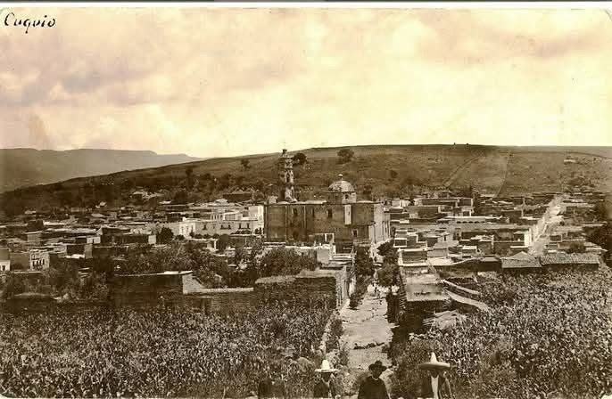

Este pueblo tiene siglos de historia y conserva tradiciones únicas que lo hacen especial.
El nombre de Cuquío proviene del término “Cuixui”, que significa “milano”, o del tarasco “cuquío”, que se interpreta como “lugar de sapos”. Su origen se atribuye a los purépechas tras la Guerra del Salitre, asentándose inicialmente en La Cofradía, cerca del actual poblado. También estuvo bajo influencia del reino Tonalteca.
Fue conquistado por Nuño de Guzmán en 1530, quien lo convirtió en su centro de operaciones. La sede del corregimiento se trasladó de Tlacotlán a Cuquío en 1690, permaneciendo ahí hasta la Independencia. En 1695, el Alcalde Mayor fue Juan Polaco. El templo comenzó a construirse en 1762 y se concluyó en 1834.
En 1823, Cuquío fue nombrado partido con ayuntamiento, y en 1824 se convirtió en departamento del Estado con categoría de villa. En 1837 fue designado cabecera de partido, y en 1846 pasó a ser cabecera del departamento del Cantón de Guadalajara.
